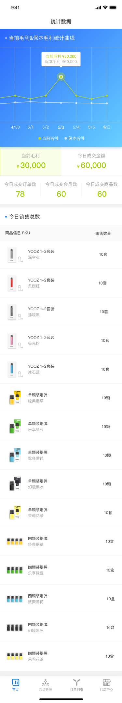
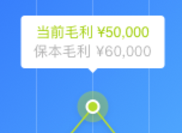
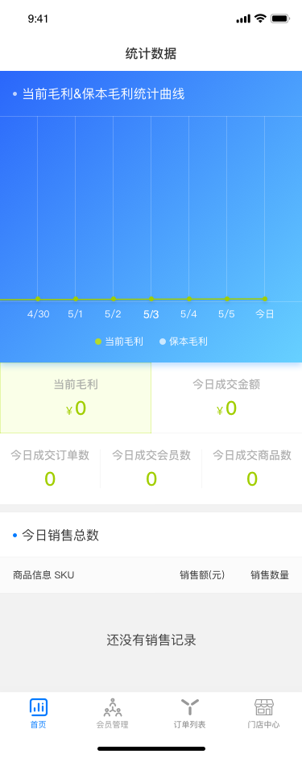
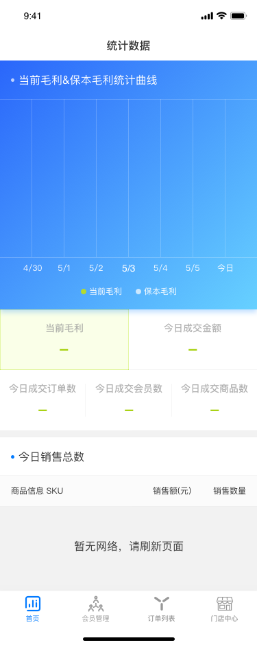

毛利大于保本毛利（即经营成本）
1.当期毛利=当期烟杆套装销售额*63%+当期烟弹销售额*42%
毛利率：（商品销售单价-成本价）/商品销售单价
2.每天保本毛利=本月保本毛利/本月天数；
3.月保本毛利即为门店月经营成本；
门店本月经营成本=当期人工费用+当期房租+其他费用
（其他费用指：当期水电+门店建设装修投入月摊销（如是月，则为总投入/12）等等）
4.当期毛利大于保本毛利，及毛利大于经营成本才能算是赚的
所以保本毛利作为毛利的参考线
然后保本毛利设置，是对店面本月成本的设置，如果没有设置陈本，就没有保本毛利参考线
提示条让他去设置对应所在月份的月成本
5.商品销售统计（sku)
显示今天卖出去的商品，及商品数量
没有卖出的不要显示
统计曲线只支持毛利和成交额两个维度切换统计：
1.按天维度的统计
2.当前屏幕固定显示7条数据
左滑连续显示更多（而不是切换7条数据）
3.默认选中今天数据点，选中状态点变成稍大的圆圈，并显示数值
4.左滑加载更多数据，为保证数据加载体验，设定最多加载数据条数
日维度：线上最新30条数据，或者是从山个月今天-今天
5.左滑时不切换默认选中项，点击某条线区域才显示数据

1
折线说明
1.折选择时间
2.如果当前的数据为0，数据点就为0，在水平线上画点，而不是跳过这条数据连线
2.往左滑动能加载出更多数据，但不用设定选中数据，只有手动点击哪一条数据时才变为选中状态，选中时日期数竖线覆盖范围都可以点中
(比如左右间距的1/4，待开发、测试点击效果定覆盖范围)
1
2

2

